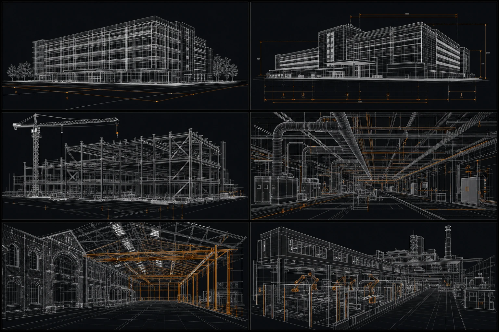

Роль в проекте
Технический заказчик собирает проект в управляемую систему: связывает застройщика, проектировщиков, подрядчиков и фактическое состояние объекта.
Конкретные полномочия зависят от договора и задачи проекта. Это не автоматическая замена генподрядчика, а отдельный контур управления решениями, документами и готовностью этапов.
Что входит в работу
До выхода на площадку важно определить, какие материалы уже есть, какой результат должен быть передан и где фиксируются изменения. На действующем производстве к этому добавляются ограничения по последовательности работ и доступу к участкам.
Исходные данные
Проверить состав материалов, изысканий и требований к объекту.
Задания и договоры
Зафиксировать результат, границы ответственности и правила версий.
Координация
Связать решения проектировщиков, подрядчиков и поставщиков.
Передача этапа
Проверить документы, замечания и готовность следующего шага.

Граница ответственности
Строительный контроль имеет собственную нормативную рамку. В рабочей схеме заранее разделяют: кто выполняет работу, кто проверяет результат, кто принимает решение и кто закрывает замечание.
На каждом этапе должен быть понятен следующий вопрос: что подтверждает готовность результата и где это зафиксировано?
Что подготовить на старте
Универсального шаблона для любого объекта нет. Но до начала работ полезно зафиксировать четыре опорные точки:
Задача
Стадия проекта и ожидаемый результат.
Участники
Роли, границы и ответственные.
Документы
Исходные данные, версии, передача.
Контроль
Точки проверки и закрытие замечаний.
Источники и связанные материалы
- Градостроительный кодекс РФ, статья 1 и статья 53
- Приказ Минстроя России № 344/пр
- Кейс «Красный Октябрь» и услуга технического заказчика
Материал объясняет общий подход и не заменяет договор, проектную документацию или юридическую консультацию. Нормативные ссылки нужно сверять с действующей редакцией.